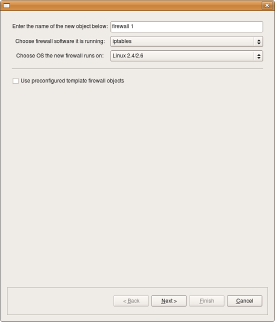
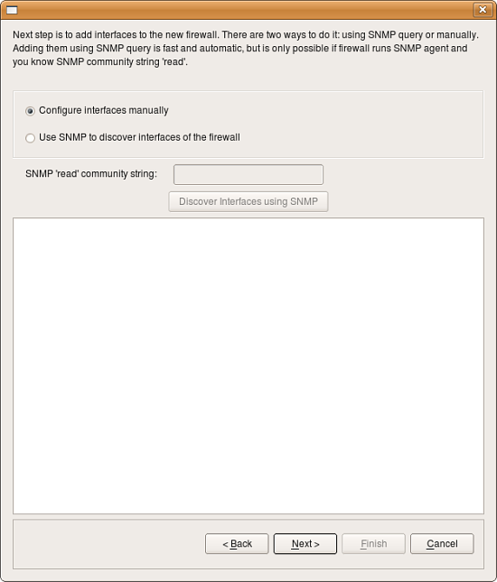
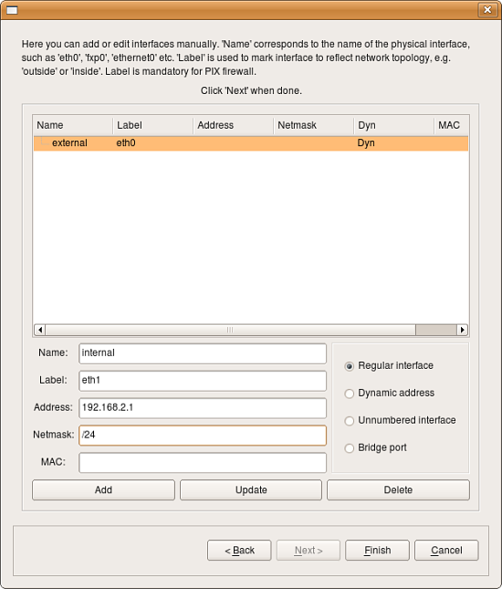
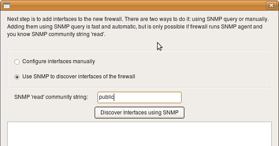
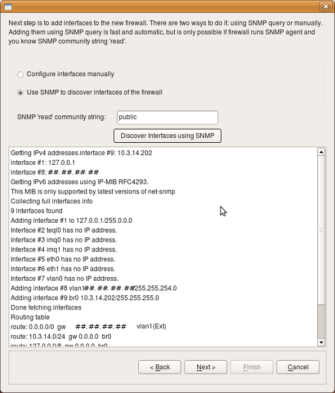
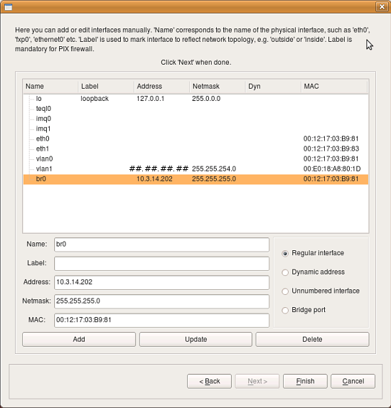
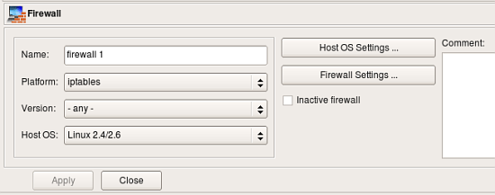
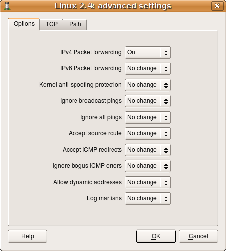
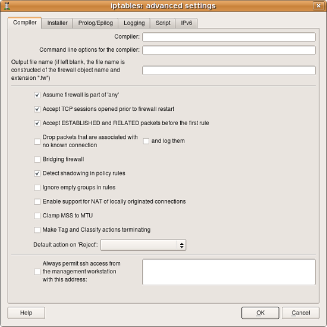

Using Firewall Object in Firewall Builder
This article continues the series of articles on Fireall Builder,
a graphical firewall configuration and management tool that
supports many Open Source firewall platforms as well as Cisco IOS
access lists and Cisco ASA (PIX). Firewall Builder was introduced
on this site earlier with articles
Getting Started With Firewall Builder,
More information on Firewall Builder, pre-built binary packages
and source code, documentation and Firewall Builder
Cookbook can be found on the project web site
at
www.fwbuilder.org. Watch Project
Blog for announcements and articles on all aspects of using
Firewall Builder.
Firewall Builder supports variety of object types,
both simple such as address, network, host, or IP,
TCP, UDP and ICMP services, as well as more
sophisticated such as Firewall, Host, Address table,
DNS name, User service. Firewall object is central
to the program and is in the focus of this article.
General Description
A firewall object is designed to represent a real
firewall device in your network. This firewall object
will have interface and IP address objects that
mirror the real interfaces and IP addresses of the
actual device. In addition, the firewall object is
where you create the access policy rule sets, NAT
rule sets, and routing rule sets that you assign to
your firewall device.
By default, a firewall has one Policy rule set, one
NAT rule set, and one routing rule set. However, you
can create more than one rule set using branching
rules (for firewalls that support them). On the
other hand, you don’t have to populate all the rule
sets. You can, for example, create a Policy ruleset
and leave the NAT and Routing rule sets empty. We
explains more about policies and rule sets below.
To speed up the creation of a firewall object,
Firewall Builder has a wizard that walks you through
creating the object. The wizard has three options
for creating a firewall object:
- From a template: Firewall Builder comes with
several pre-defined templates. You can use these
to create a firewall that is close to your
configuration, the modify it to fit your
needs. This method is demonstrated in the
"Getting Started with Firewall Builder"
here
or here.
- Manually: You can provide interface IP
address, subnet mask, gateway, and other
parameters manually. You can add this
information when you create the firewall, or you
can add it later.
- Via SNMP: Firewall Builder uses SNMP queries
to learn about the network.
Creating Firewall Object Manually
To start the firewall object creation wizard,
right-click the Firewalls folder in the User tree
and select New Firewall.
The first page of this wizard is displayed.

Give the firewall object a name. Usually, this name
will be the same name as the device, but it doesn’t
have to be if you’re assigning interfaces
manually. (If you will use SNMP or DNS to populate
the interfaces, then the name must be the same as
the device name.) Then specify the firewall software
and OS. Leave the Use pre-configured template firewall
objects checkbox unchecked. Click Next.

Select Configure interfaces manually and click Next.

Use this screen to add firewall interfaces. Populate
the following fields for an interface, then click Add
to add the interface. Then, populate the fields again
for the next interface. If you make a mistake, click
on the interface in the list, make your changes,
then click Update.
- Interface type: Indicate the type of
interface. We explain interface types in more
detail below. Briefly, though, a Regular
interface has a static IP addresses, a Dynamic
address interface has a dynamic address provided
by something like DHCP, an Unnumbered interface
never has an IP address (PPPoE connection, for
example), and a Bridge por t is an interface
that is bridged in the firewall.
- Name: The name of the interface object in
Firewall Builder must match exactly the name of
the interface of the firewall machine it
represents. This will be something like "eth0",
"eth1", "en0", "br0", and so on.
- Label: On most OS’s this field is not used and
serves the purpose of a descriptive label. The
label is mandatory for Cisco PIX though, where
it must reflect the network topology. Firewall
Builder GUI uses the label, if it is not blank,
to label interfaces in the tree. One of the
suggested uses for this field is to mark
interfaces to reflect the network topology
(’outside’, ’inside’) or interface purpose (’web
frontend’ or ’backup subnet’).
- Address: If the interface has a static IP
address, specify it here. (In Firewall Builder
version 3, this must be an IPv4 address. If you
need it to be an IPv6 address, create the
interface without an IP address, then add the
IPv6 address after you have created the firewall
object.)
- Netmask: Use either a traditional netmask
(255.255.255.0) or slash notation (24, without
the actual slash) to specify the interface
netmask.
- MAC: If you like, you can also specify the
interface physical address. The MAC address is
not necessary, but it can be used to combat
spoofing. If the feature is turned on and
available, and interface object with MAC address
is used in a policy rule, then the firewall will
only accept packets from the given IP address if
the MAC address also matches the one specified.
Once all the interfaces are configured, click Finish
to create the new firewall object.
Note: You can always add, modify and delete
interfaces later using controls provided in the main
window.
Creating Firewall Object using SNMP discovery
If your firewall runs SNMP daemon, you can save
yourself some time by using SNMP discovery to
automatically create interfaces of the new firewall
object.

Start by checking checkbox "Use SNMP" on the second
page of the wizard and enter SNMP "read" community,
then click button "Discover interfaces using SNMP".

Firewall Builder will run series of SNMP queries to
the firewall to read the list of interfaces and
their addresses. Both IPv4 and IPv6 address can be
imported. For IPv6 the firewall must support IP-MIB
RFC4293. Once discovery process finishes, click
"Next".

Next page of the wizard offers an opportunity to
review discovered interfaces and make adjustments if
necessary. To change something, highlight an
interface, edit its parameters in the dialog, then
click "Update". Finally when the process is done and
you click "Finish" in the wizard, the program
creates new firewall object in the tree and adds all
configured interfaces and their addresses.
Editing Firewall Object
The Firewall Object represents the firewall machine
and is the most complex object in Firewall Builder.
It has three sets of controls that you can modify,
not including the policy rule sets. All these
controls become available when you double-click the
firewall object in the tree.

The base controls let you specify the basic settings
of the firewall, such as the name and firewall
platform.
- Name: Specify/change the name of the firewall object.
- Platform: Specify/change the firewall software.
- Version: Specify/change the version number of
the firewall software. In most cases, you can leave
this set to any.
- Host OS: Specify/change the host operating
system of the firewall device.
- Inactive firewall: Check this box to make the
firewall inactive. The firewall name will change to
a regular font (instead of bold) to indicate that
it is inactive, and the firewall will not be
available for compiling or
installation. Essentially, it’s a way to "comment
out" the firewall without deleting it.
- Host OS Settings: Opens the Advanced Settings
dialog for the indicated Host OS.
- Firewall Settings: Opens the Advanced Settings
dialog for the platform/firewall software.
Host OS Settings Dialog
For explanations of the various controls, click the
Help button in the dialog.

Firewall Settings Dialog
For explanations of the various controls, click the
Help button in the dialog.

Interface Object

Interface objects belong to firewall or host
objects. Interface objects cannot exist alone. The
dialog for the interface object that belongs to the
firewall or host provides controls for the parameters
described here.
- Name: The name of the interface object in
Firewall Builder must match exactly the name of
the interface of the firewall machine it
represents. This will be something like "eth0",
"eth1", "en0", "br0", and so on.
- Label: On most OS’s this field is not used and
serves the purpose of a descriptive
label. Firewall Builder GUI uses a label, if it
is not blank, to show interfaces in the
tree. One of the suggested uses for this field is
to mark interfaces to reflect the network
topology (’outside’, ’inside’) or the purpose
(’web frontend’ or ’backup subnet’). The label
is mandatory for Cisco PIX though, where it must
reflect the network topology.
- Management interface: When firewall has
several network interfaces, one of them can be
marked as the ’management interface’. The
management interface is used for all
communication between Firewall Builder and the
firewall. For example, built-in policy installer
uses address of the management interface to
connect to the firewall via ssh when it copies
generated script or configuration
file to it.
- External interface (insecure): Marks an
interface that connects to the Internet.
- Unprotected interface: Marks interface to
which Firewall Builder should not assign any
access lists or firewall rules. Unprotected
interfaces are recognized by policy compilers
for Cisco IOS access lists and PF. Compiler for
IOS ACL just skips unprotected interfaces and
does not assign any ACL to them when it choses
which interface to associate given ACL
with. Compiler for PF generates "set skip
on <interface_name>" clause for unprotected
interfaces.
- Regular Interface: Use this option if the
interface has an IP address assigned to it
manually (static IP address).
- Address is assigned dynamically: Use this
option if the interface has a dynamic address
(obtained by means of DHCP or PPP or another
protocol). In this case an address is unknown at
the moment when Firewall Builder generates the
Firewall policy. Some firewalls allow for using
the interface name in the policy instead of its
IP address; the firewall engine then picks its
address either when the policy is activated or
even at run-time. Some other firewalls support
special syntax for rules that are supposed to
match packets headed to or from the firewall
machine. Examples of these two cases are OpenBSD
PF and Netfilter. PF rules can be constructed
using interface names; PF automatically uses the
current interface address when it loads rules
into the memory. Netfilter supports special
"chains" called "INPUT" and "OUPUT" that are
guaranteed to inspect only packets headed for
the firewall machine ("INPUT") or originated on
it ("OUTPUT"). Both methods allow Firewall
Builder to build correct firewall policy rules
that affect the interface with a dynamic IP
address, however the interface must be marked as
such for the policy compiler to use proper
technique depending on the target firewall
platform. In cases where the rule has to use
actual IP address of the interface (example:
anti-spoofing rules), compiler emulates this
feature by adding shell script fragment to
determine the address at the time when firewall
script is executed and then uses the address in
rules. Such emulation is only possible on
platforms where firewall configuration is in the
form of the shell script, most notably this is
iptables script on Linux.
- Unnumbered interface: Use this option if the
interface can never have an IP address, such as
the Ethernet interface used to run PPPoE
communication on some ADSL connections, or
tunnel endpoint interface. Although unnumbered
interface does not have an address, firewall
policy rules or access lists can be associated
with it.
- Bridge port: This option is used for port of
bridged firewall. Compilers skip bridge ports
when they pick interfaces to attach policy and
nat rules to. For target firewall platforms that
support bridging and require special
configuration parameters to match bridged
packets, compilers use this attribute to
generate proper configuration. For example, in
case of iptables compiler uses -m
physdev --physdev-in or -m physdev --physdev-out
for bridge port interfaces.
- Security level: Depending on the firewall
platform, the security level is either
External/Internal or a numeric value between 0
and 100, with 0 being least secure and 100 being
most secure levels. This field in the GUI dialog
automatically shows controls appropriate to the
current firewall. Not all firewall support the
concept of a security zone.
- Network zone: Network zone of this interface,
used only with Cisco PIX (ASA). Network zone
drop-down list shows all network objects and
groups of addresses and networks present in the
tree. Choose one of them to tell the compiler
which networks and blocks of addresses can be
reached through this interface. Usually the
external interface (the one which connects your
firewall to the Internet) has the Network Zone
set to Any. It is also recommended that you
create a group of objects to represent Network
Zones for all other interfaces on the firewall.
The compiler uses this information to decide
which interface each ACL rule should be
associated with based on the addresses used in
the destination of the rule.
We will take a look at other object types in the
next article.